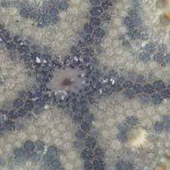
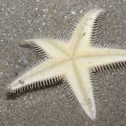
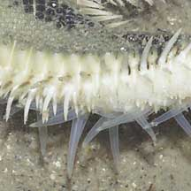
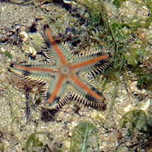
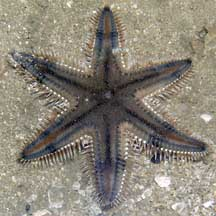
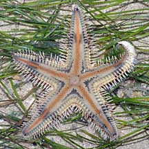

|
|
| sea stars text index | photo index |
| Phylum Echinodermata > Class Stelleroida > Subclass Asteroidea > Genera Astropecten |
| Painted
sand star Astropecten vappa Family Astropectinidae updated Jul 2020 Where seen? This large colourful fast moving sea star is sometimes encountered on our Northern shores. In sandy or silty shores, near seagrasses. According to Marsh and Fromont, it is moderately common on silty sand, weed and sand and shells in Australia. Features: Diameter with arms 6-8cm. Body rather flat. Usually 5 arms long, tapered to a sharp tip. Along the sides of the arms are large marginal plates and stout flat long spines. These spines resemble the teeth of a comb and members of this family are sometimes called Comb sea stars. The spines are white, usually tinged a pale orange at the base. Upperside a light blue background with orange or darker blue stripes shading to orange near the tips. The arm tips are black. Sometimes with darker blue bands near the arm tips. Underside pale without markings. Tubefeet translucent with pointed tips. What does it eat? According to Marsh and Fromont, it eats small clams and snails, which are swallowed whole. |
 Changi, Jun 05 |
 Stout flat spines on the sides. |
 Madreporite at bottom right. |
|
 Underside white without markings. Changi, Jun 05 |
 Pointed tube feet. Changi, Jun 06 |
 Parasitic Ulimid snail. East Coast Park, Feb 16 Photo shared by Loh Kok Sheng on flickr. |
|
 Tiny painted star Changi, Jul 08 |
 With six arms. Chek Jawa, Jun 03 |
 Changi, Oct 10 |
*Species are difficult to positively identify without close examination.
On this website, they are grouped by external features for convenience of display.
| Painted sand stars on Singapore shores |
On wildsingapore
flickr
|
| Other sightings on Singapore shores |
Links
|